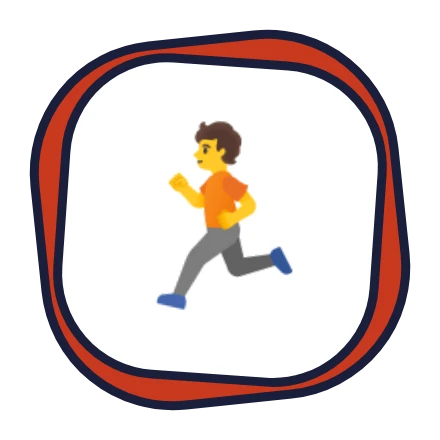

전력 질주의 해
숨 가쁘게 달려서 여기까지 온 한 해
이 유형이 나온 정도
-
낮게 나왔다면 올해가 여러 이름을 가진 해였다는 뜻이에요
올해의 당신은 쉬는 날보다 달리는 날이 많았어요. 일이든 공부든 맡은 것을 끝까지 밀고 가느라 달력에 빈칸이 거의 없었죠. 돌아보면 해낸 일이 분명히 쌓여 있어요. 다만 속도를 내느라 몸과 마음이 보낸 신호는 몇 번 지나쳤을 거예요.
올해 이런 모습이었어요
- 일정이 빽빽해야 오히려 마음이 놓였음
- "이것만 끝내고"를 가장 많이 말한 해
- 연말이 되어서야 피로가 한꺼번에 몰려옴
📖 이 결과에 대해 조금 더
달린 만큼 남은 것
바쁘게 지낸 해는 지나고 나면 "뭘 했더라" 싶을 때가 많아요. 그럴 땐 끝낸 일 목록을 적어 보세요. 마친 프로젝트, 딴 자격, 넘긴 고비를 하나씩 쓰다 보면 한 해가 헛되지 않았다는 게 눈에 보여요.
내년에 가져갈 것 하나
내년 달력에는 아무것도 적지 않는 칸을 먼저 만들어 두세요. 한 달에 하루면 충분해요. 달리는 힘은 이미 증명됐으니, 이제는 오래 달리는 법을 더할 차례예요.
올해 이런 사람과 잘 맞았어요
⚠️ 이 테스트는 재미로 즐기는 콘텐츠이며 전문적인 심리 진단이 아니에요.